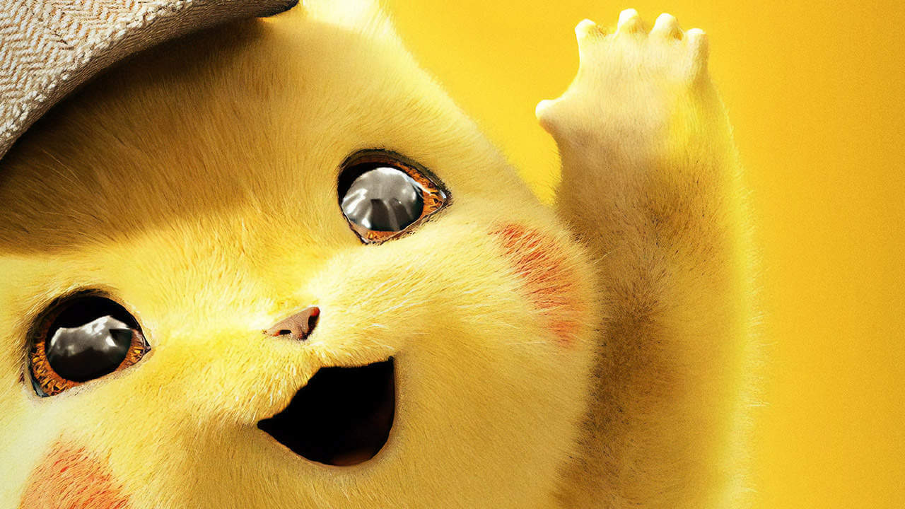
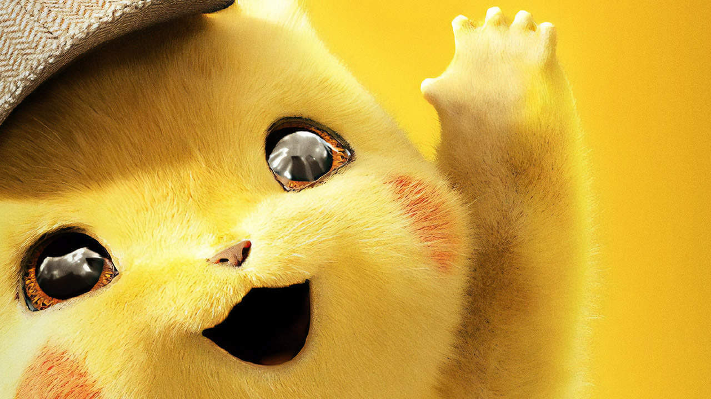

Pikachu are a species of Pokémon, fictional creatures that appear in an assortment of video games, animated television shows and movies, trading card games, and comic books licensed by The Pokémon Company, a Japanese corporation. They are yellow rodent-like creatures (large-eared pika) with powerful electrical abilities. In most vocalized appearances, including the anime and certain video games, they are primarily voiced by Ikue Ōtani. A Pikachu also appears as part of the main cast in the live-action animated film Pokémon Detective Pikachu, played in CGI and voiced by Ryan Reynolds.
The Pikachu design was conceived by Atsuko Nishida and finalized by Ken Sugimori.[2] Pikachu first appeared in Pokémon Red and Green in Japan, and later in the first internationally released Pokémon video games, Pokémon Red and Blue, for the original Game Boy.